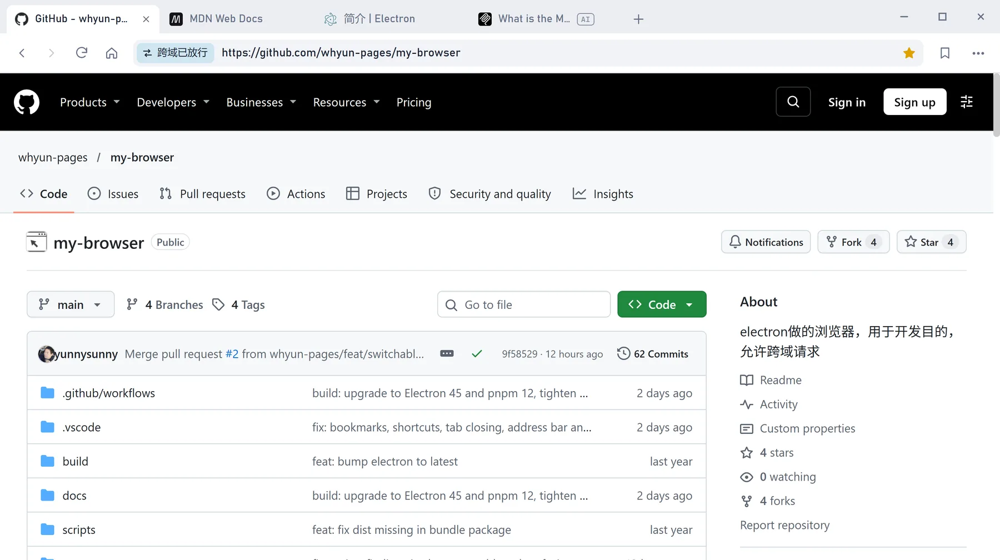
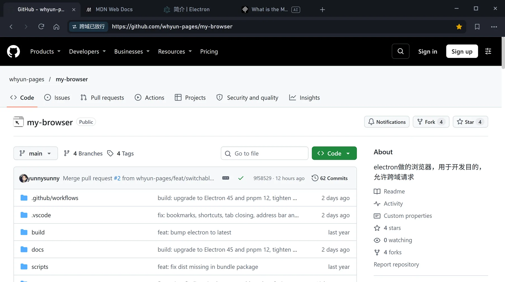
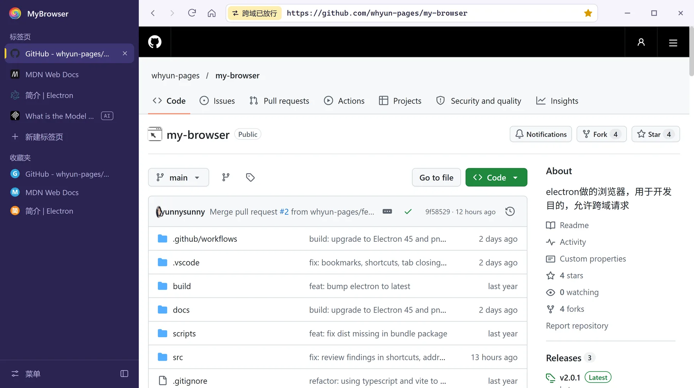
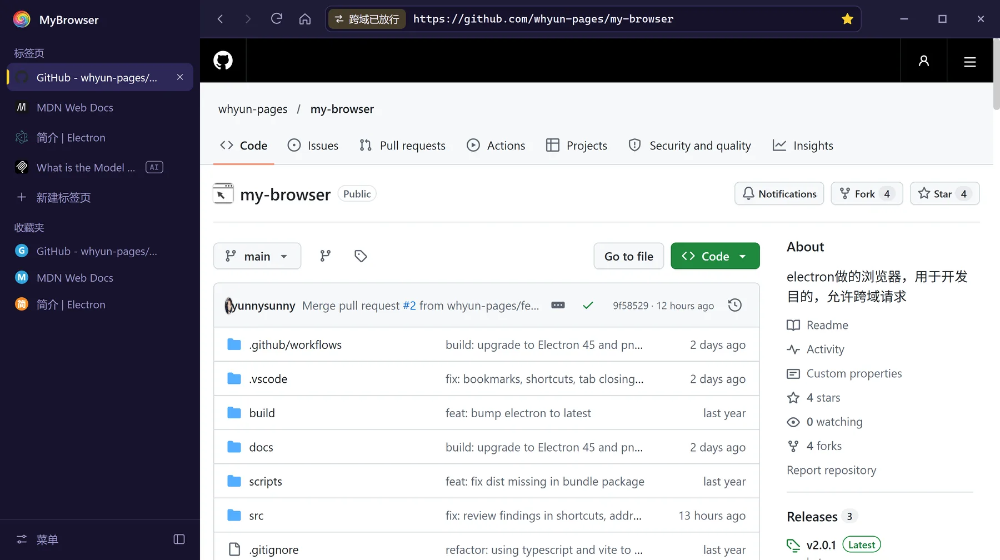
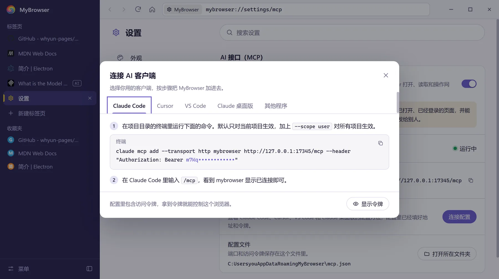

切布局不刷新页面
经典布局适合标签少、屏幕窄的时候；侧栏布局把标签页和收藏夹竖着排，标题再长也看得全，还能收起成一条只显示图标的窄栏。 切换时正在填的表单、播放的视频都还在原处。
MyBrowser 是一个轻量的桌面浏览器。经典和侧栏两种布局一键切换，打开的页面不会重新加载； 给开发调试准备了跨域开关；还可以开启 AI 接口，让 Claude Code、Cursor 这类工具替你打开、读取和操作网页。




经典布局适合标签少、屏幕窄的时候；侧栏布局把标签页和收藏夹竖着排，标题再长也看得全，还能收起成一条只显示图标的窄栏。 切换时正在填的表单、播放的视频都还在原处。
调接口时打开“允许跨域”，新开的标签页不受同源策略限制；平时关掉，和普通浏览器一样。 地址栏左端始终显示当前标签页的实际状态，不用猜。
点星标收藏当前页面。地址栏输入网址、域名或本机地址直接打开，输入其他内容用必应搜索。 主题有浅色、暗黑和跟随系统三种。
焦点在网页里时也有效。macOS 上用 Cmd 代替 Ctrl。
在设置页打开“AI 接口（MCP）”，MyBrowser 会在本机启动一个 MCP 服务。Claude Code、Cursor、VS Code、Claude 桌面版等客户端连上之后， 就能在后台标签页里打开网页、读文字、截图、点按钮、填表单——不会把页面切到前台，也不会抢走你正在打字的输入框。
开启前请注意：连上的 AI 能看到并操作所有已打开的标签页，包括你已经登录的网站，也能在页面里执行脚本、提交表单。 服务只监听本机，每个请求都要带访问令牌；只连接你信任的客户端。
claude mcp add --transport http mybrowser http://127.0.0.1:17345/mcp \
--header "Authorization: Bearer <你的令牌>"
list_tabs open_tab close_tab activate_tab
navigate navigate_history wait_for
get_html get_text query_dom screenshot
click fill dispatch_event evaluate
AI 打开的标签页标题旁有 AI 标记。click 发送真实鼠标点击；选择器不进 iframe 和 Shadow DOM，截图不支持整页长图。
完整说明见 README。
当前版本 2.0.1。安装包在 GitHub Releases 页面。
安装版（.exe）或便携版，x64
.dmg 或 .zip，Intel 与 Apple 芯片
AppImage、.deb、.rpm、.tar.gz，x64
安装包没有正式签名，Windows 上杀毒软件可能会先观察几秒再放行；把安装目录加入例外即可。
想自己构建：pnpm install 后运行 pnpm build。